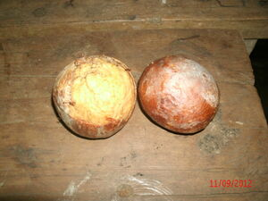

behas 
/bɔgas/
“fruit”
1.
n.
fruit
Seini ka hun-a ne behas te kasilè ku diyè te Pahuyuren.
This is the first fruit of my sweet potato that I planted in Pahuyuren.
Eng. fruit
Tag. prútas; bunga
Ceb. búnga; prútas
Ilo.: prútas
OCM: Ethnobotany (824)
DDP: Parts of a plant (1.5.5)
Online dict status: -
Usage level: F
vi.
for a plant or tree (egbebehas, migbebehas/imbebehas, bebehas, eg><ø-rdpCV-) to bear fruit (even if there is currently none)
Kenè egbebehas ka niyug kayi te Simud.
The cocunut will not+bear fruit here in Sinuda.
Eng. bear fruit; fruit, to; produce, to
Online dict status: -
Usage level: M
vi.
for a plant or tree (egpamehas, migpamehas/impamehas, pamehas, eg><ø-paN-) to actually bear fruit in season
Egpamehas e ka suhutungan ney su egpamulak e.
Our eggplant actually bear fruit because it will have a flower.
Eng. bear fruit; fruit, to; produce, to
Online dict status: -
Usage level: M
adj.
(mabehas, mA1-) fruitful
Mabehas ka kasilè ne impamula ku diyè te kallambehan.
My sweet potato was+fruitful because it was planted in the loam soil.
Tatelu ne lebut ka mangga ku piru sabeka rè ka mabehas.
I have three trunk of Manggo tree but only one is fruitful.
Eng. fruitful
OCM: Soil (134)
DDP: Soil, dirt (1.2.2.1)
Online dict status: -
Usage level: R
2.
n.
husked rice
cf. ukaba —chaff
cf. lireklirek —bran
Syn. ballas
Eng. rice, husked; husked rice; hulled rice
Tag. bigás
Ceb. bugas humay
OCM: Preservation and Storage of Food (251)
Online dict status: -
Usage level: M
3.
n.
a derogatory term for the vagina
cf. betì
Eng. derogatory term; vagina
Online dict status: -
Usage level: MS
Updated by: RJH,AAA,RJH,RUL,AAA,QDL,RAA,QDL,RJH
Last updated: 26/Jan/2010
"behas" in healthbook "Anak ni Biltu ne migkerid"
"behas" in healthbook "Anak ni Biltu ne migkerid"
"behas" in healthbook "Anak ni Biltu ne migkerid"
"behas" in healthbook "Anak ni Biltu ne migkerid"
"behas" in healthbook "Anak ni Biltu ne migkerid"
This page last updated: 03-Jan-2020
Copyright © 2009-2014, Matigsalug Language Christian Association, Inc